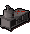

")
Construction - The Basics
Introduction
Construction is a very flexible skill, you use it to help build your very own house or make items to sell to other players. Building a good quality house with Construction is not only fun and easy, but also beneficial to a variety of other skills.
Starting out - the Estate Agent

The exact location of the Estate Agent is shown to the right, he can sell you a house, magically re-decorate your house, or move its location.
If you are stuck, he also provides a useful book to guide you through the processes.

Now that you have bought your house, you probably want to visit it and start building!
Your first house is located in Rimmington, south-west of Falador.
The highlighted area on the map is a portal. If you click on it, you get the options below:
| Menu Option | Use |
| Go to your house | This will take you directly to your house, where you can walk around and fully interact with your house's features. Visitors can only come into your house if it is in this mode. |
| Go to your house (building mode) | Read on further for building mode. Basically, to construct items, rooms and ultimately your house, you must be in this mode. Visitors cannot come in if you are in building mode. |
| Go to a friend's house | Upon clicking this, you are prompted to enter your friend's username. If they are in their house, not in building mode and have allowed visitors to enter (explained later), you will be allowed to go to their house. |
Alternatively, you can use the Teleport to House spell to arrive. Depending on the settings you have in your house options menu (see below), you can choose to arrive at the portal, beside the exit portal in your house, and in building mode or normal mode.

Welcome to the house you have purchased! It isn't much yet, just a garden and one room, but with a limit of 32 rooms, you will easily be able to build a mansion! Note that the number of rooms you can build depends on your Construction level; please read the Construction FAQ for a full explanation.
Please note: If you die in your house, you will spawn outside the portal, retaining all of your items.
Building a house

When in building mode, you will see that there are many items in the room that are semi-transparent, these are refered to as Hotspots. Wherever there is a hotspot, there is a possibility of building a room, or furniture for a room.
When you have decided what you want to build, go to your chosen hotspot and right-click it. You will see the 'Build' option. Building on door hotspots will give the option of making a new room.
When you select the 'Build' option, you will see a 'Furniture Creation Menu' appear. A creation menu for the chair hotspot is shown below. This menu displays the items that can be constructed here, and what Construction level you will need to make it, as well as the items you will need. Further to the items displayed in this menu, you will always need a saw (see the Sawmill operator), and a hammer.

You can remove a piece of furniture if you wish to build something else in the same space. To do this, right-click on it and select 'Remove'. You will not get any of the materials back. Some pieces of furniture can be upgraded to better pieces of furniture without having to remove them first.
To build a new room, you must use one of the door hotspots at the edges of rooms or garden squares. Right-click on it and select 'Build'. This will bring up a list of rooms. Different rooms cost different amounts of gold and have different Construction level requirements. If you select 'Build' on a door hotspot that already leads to a room, you will be asked whether you want to delete that room. You can have up to 30 rooms in your house.
Materials
For constructing most items of furniture, your material resource will be planks. Planks come in a few varieties, increasing in quality: wood, oak, teak and mahogany. To find out about planks, it is advised you visit the Sawmill Operator. Aside from planks, he also sells saws, cloth and nails.
During your normal construction you'll find that having a selection of basic materials will make your building work go much more smoothly and you'll have your home looking warm and welcoming in no time at all. These materials are all standard materials used in Smithing and Crafting so you'll find them easy to acquire and include: limestone bricks, bolts of cloth, soft clay, molten glass and iron and steel bars.
When your Construction level gets higher, you may want to look into obtaining marble blocks, gold leaf, or even magic building crystals. These are sold by the Stonemason, found in Keldagrim.
The Rooms
| Room | Levels required |
Cost | Use |
Garden |
1 |
1000 | The garden is largely decorative but it also contains the exit portal, you must have at least one exit portal in your house area. |
Parlour |
1 |
1000 | This is the lowest level room, where 3 chairs can be constructed around a fire. |
|  Kitchen |
5 |
5000 | This room can be used for preparing food. As you build better furniture in it you will find yourself able to prepare better meals in it. There is space for a pet cat here, too! |
Dining Room |
10 |
5000 | Eight people can sit around the table you build in this room, you can also summon your servant to prepare food. |
Workshop |
15 |
10000 | This room allows you to train Construction without modifying your house, by making furniture that can be sold to other players. It also provides space for you to train Crafting and Smithing. |
Bedroom |
20 |
10000 | Some of the furniture in this room can be used to change your hair and clothes. You will also need two of these rooms in order to hire a servant. |
Skill Hall |
25 |
15000 | These are primarily used to connect other rooms, but they also provide space to show off your skill achievements. |
Games Room |
30 |
25000 | Various games can be built in this room to allow friends to play and train together. |
Combat Room |
32 |
25000 | With this room you can challenge your friends in a personal duelling ring. |
Quest Hall |
35 |
25000 | These are primarily used to connect other rooms, but they also provide space to show off your quest achievements. |
Menagerie |
37 |
30000 | An outside space that's an ideal home and playground for the pets you can gain from Summoning. |
Study |
40 |
50000 | You can use the lectern in this room to create clay tablets recording magic spells. The elemental sphere in this room can be used to change the element of an elemental staff. |
![[image]](../../img/main/kbase/skills/construction/items/costume/oak_cape_rack.gif) Costume Room |
42 |
50000 | You can use the furniture in the costume room to store holiday items, activity rewards, random event costumes and toys. |
Chapel |
45 |
50000 | This room can be dedicated to any of RuneScape's major gods, and the altar can be used to offer bones. |
Portal Chamber |
50 |
100000 | In this room you can build portals to various places around the world. |
Formal Garden |
55 |
75000 | The formal garden can contain various plants and ornaments to beautify the grounds of your house. |
Throne Room |
60 |
150000 | This room can be used to hold audiences with large numbers of friends. It also contains the lever that turns on challenge mode. |
Oubliette |
65 |
150000 | If you build an oubliette below your throne room you can drop people from there into a cage which you can fill with various horrors. |
Dungeon |
70 |
7500 | Dungeon corridors, junctions and stairs can be built to create an underground maze full of monsters, traps and doors. |
Treasure Room |
75 |
250000 | You can place a prize in this room for visitors to your dungeon to try to reach. |
House Controls
It is important that you read this information, so you understand how access to your house or your friends' houses can be controlled. Please remember that you can only visit/be visited when you are not in building mode.

When you are in your house, you can simply right-click your entrance portal (this is where you come in and visitors will appear), and select 'Lock portal'. Locking the portal denies everyone access to your house (except yourself, of course). To unlock, simply right-click again and select the option.
Private Chat/Friends List
You can also control access with your friends list/private chat options. If your private chat is set to 'On', then anyone can come into your house. If your private chat is set to 'Friends only' then only players on your friends list will be able to enter. Having private chat set to 'Off' is similar to locking your portal.

More articles in
Construction (Members Only)
|
|
|
Further Help
If this article does not help you, you may find the following sections of the RuneScape site helpful:
|
|